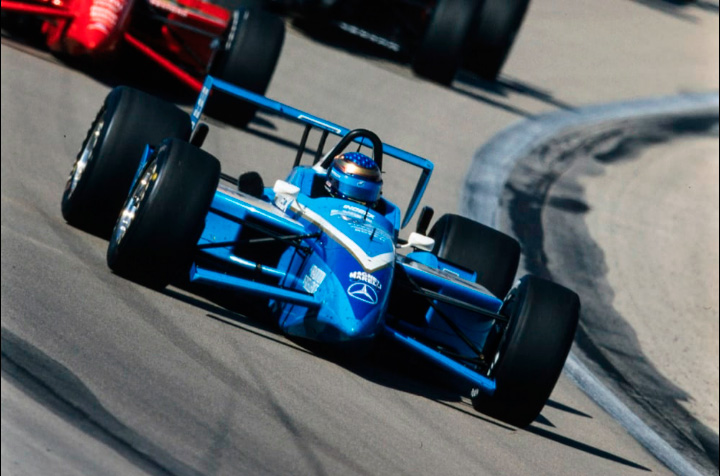
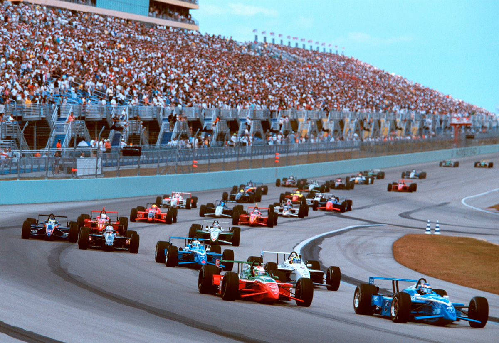
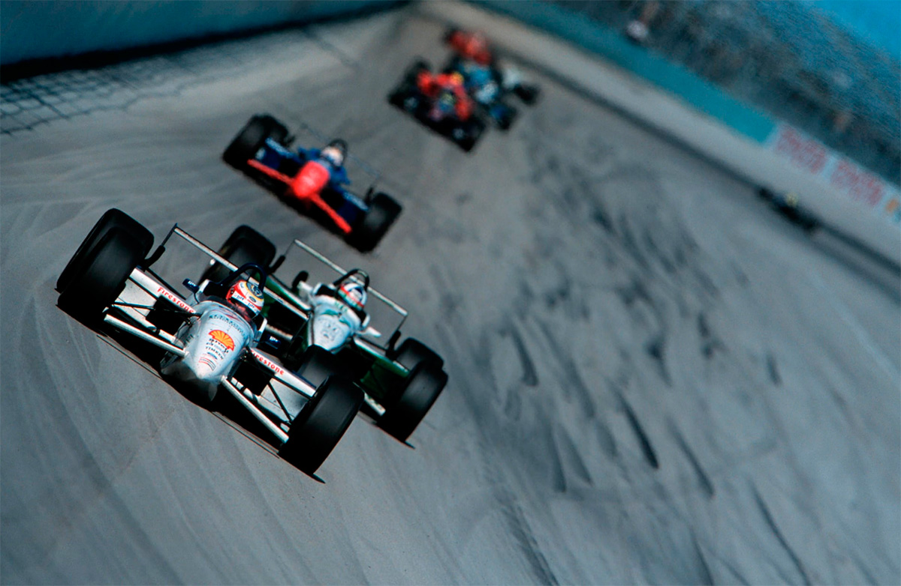
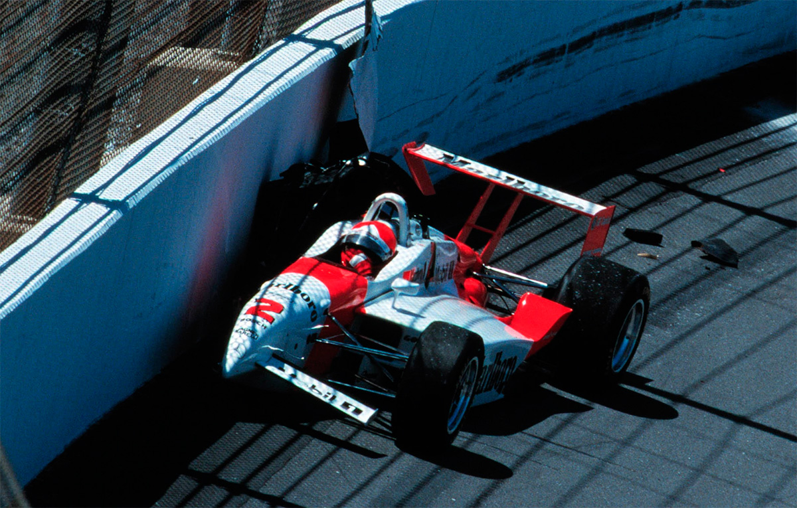
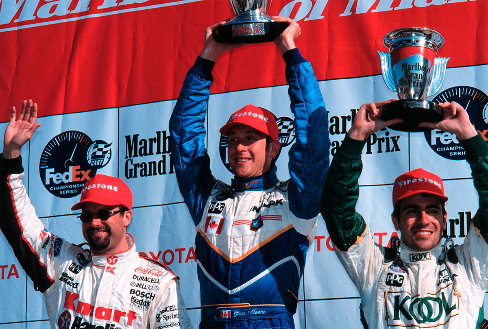

Miami - 21/03/1999
Protagonista, do início ao fim

Moore larga na pole e vence um duelo repetido com Andretti na prova de abertura da temporada.
MIGUEL COSTA JR
Temporada nova, roteiro velho. Greg Moore e Michael Andretti repetiram na prova de abertura da Cart, no oval de Homestead, o pega da corrida de 1998. Desta vez, o canadense levou a melhor, por uma vantagem de 1s110, um pouco mais cômoda do que os 75 milésimos que separaram os dois na corrida do ano passado. Moore deu um cartão de visita assustador para a concorrência, marcando a pole-position, liderando o maior número de voltas e obtendo todos os 22 pontos em jogo. Mas o GP de Miami não serviu como um retrato do resto do campeonato. Como nos dois anos anteriores, Moore não teve fôlego para se manter na briga do título. E o chassi Swift da Newman-Haas também não se equiparou ao Reynard, campeão da categoria pelo quinto ano consecutivo. A impressão mais equivocada foi deixada pelo desempenho da Mercedes. Muita gente apostou que o V8 mais compacto e moderno da Cart enfim fosse ter o seu grande ano, mas o motor não venceu mais e foi aposentado ao fim da temporada.

A corrida se decidiu na estratégia. Moore não tinha o carro mais veloz da pista. "O carro mais rápido era o de Dario Franchitti", reconheceu. "Mas sabíamos que ele adotaria uma estratégia conservadora e eu tinha certeza de que poderia apostar e me dar melhor." Moore optou por dois pit stops, enquanto Franchitti parou fora da janela, na volta 114, e perdeu contato com os dois líderes. O escocês ainda voou baixo, recuperou cinco posições em 30 voltas, mas terminou no degrau mais baixo do pódio. Moore venceu Andretti graças a um contratempo no segundo reabastecimento do americano. Os mecânicos fizeram a sua parte, concluindo a operação em 13 segundos. Mas o piloto deixou o motor morrer quando o carro desceu ao chão. O erro custou a terceira vitória seguida em Homestead. "Não fosse isso e Michael poderia ter me alcançado nas voltas finais, quando precisei poupar combustível", admitiu Moore. O canadense ainda levou um susto na última volta, quando a luz de alerta do metanol acendeu. Mas o combustível que restava no tanque foi suficiente para completar os 2.417 metros finais. Franchitti repetiu a impressão deixada na última prova da temporada de 98, em Fontana: Já o colombiano Juan Pablo Montoya teve uma estréia bem discreta. Ele até conseguiu classificar uma posição à frente frente de Jimmy Vasser no grid, em oitavo. Mas, na corrida, foi amplamente superado, chegando em décimo, bem atrás do companheiro, que foi quarto colocado.

O escrete brasileiro começou o ano maior do que nunca (com oito representantes: Gil de Ferran, Hélio Castro Neves, Christian Fittipaldi, Maurício Gugelmin, Tony Kanaan, Cristiano da Matta, Luiz Garcia Jr. e Raul Boesel), mas desfalcado de André Ribeiro, que montou projeto de abrir uma concessionária Penske em São Paulo. Os brazucas tinham grandes esperanças de vencer, mas só Gil e Helinho brilharam. Depois de sofrer um acidente a 290 km/h nos treinos, pelo estouro do motor, Gil alinhou na penúltima fila e chegou a liderar duas voltas. Terminou em sexto, depois de um show de ultrapassagens. Ao chegar aos boxes, Gil foi festejado pelos mecânicos da Walker como se tivesse ganhado a corrida. Emocionado, chorou abraçado à mulher, Angela, e à filha, Anna. Helinho foi a grande surpresa. Levou o desacreditado chassi Lola ao quarto lugar do grid e também liderou, por 29 voltas. Mas teve de abandonar com um problema elétrico. Sem dinheiro, o patrão Carl Hogan sorriu de orelha a orelha, vendo o seu novo piloto - que substituiu J. J. Lehto às vésperas de a temporada começar - andar na frente.

Cristiano da Matta superou as expectativas. O campeão da Indy Lights alinhou em sexto - a melhor posição do motor Toyota na Cart - e andou sempre entre o sexto e o décimo lugar na prova, até perder pressão num dos pneus traseiros e ser obrigado a um pit stop extra no fim. Chegou em 14º. Christian Fittipaldi veio calçado de pneus Firestone. A Newman-Haas abandonou os Goodyear a um mês da estréia, mas o brasileiro chegou só em nono. Maurício Gugelmin pontuou, em 11°, uma volta atrás. Tony Kanaan não confirmou a expectativa criada em torno do McDonald's Team - a antiga Tasman, comprada pelo milionário Gerald Forsythe. Em nenhum momento do fim de semana, Tony e os engenheiros conseguiram acertar o Reynard-Honda. Ele largou em 17° e abandonou com queda da pressão de combustível. Luiz Garcia Jr. e Raul Boesel- que voltou à Cart após um ano na IRL, substituindo Paul Tracy, suspenso - envolveram-se no acidente na largada entre Al Unser Jr. e Naoki Hattori. Unser quebrou o tornozelo e rompeu o tendão - um mau presságio para outro ano negro da Penske. Hattori levou a pior e, com duas fraturas graves na tíbia, ficou cinco meses de molho.
